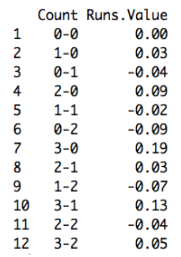
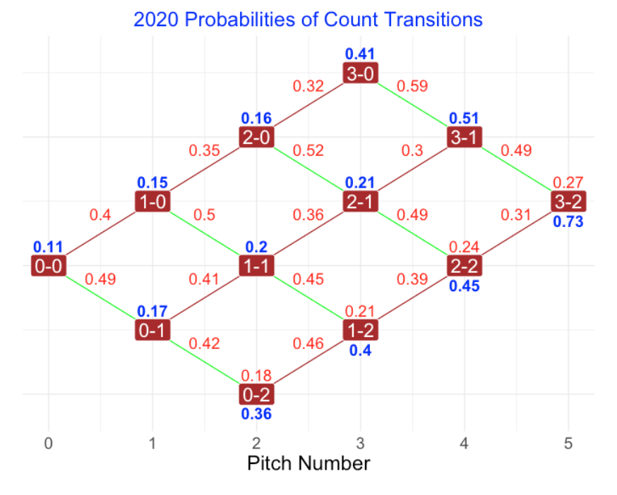
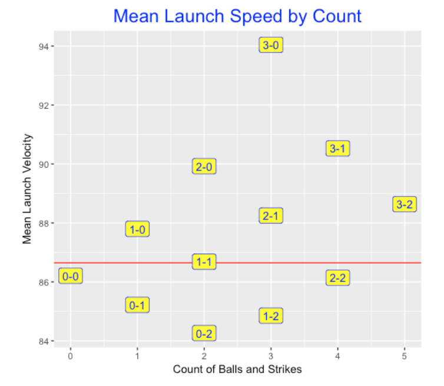
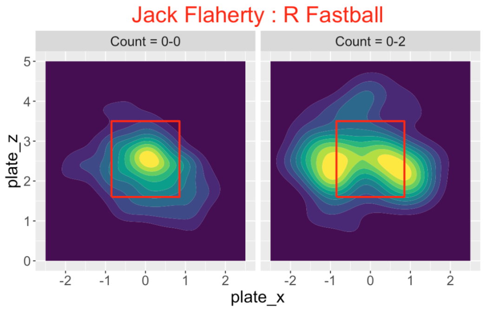
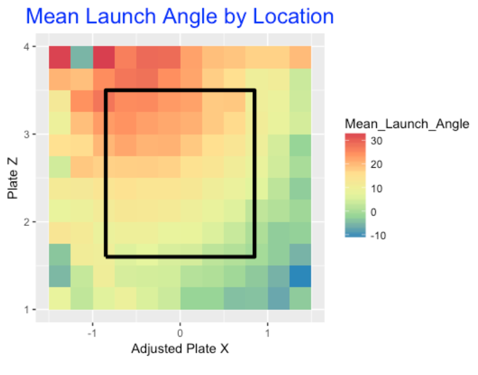

Count Effects
1 Introduction
As most baseball fans know, the “count”, that is, the sequence of balls and strikes in a plate appearance, plays an important role in baseball. This article is a compilation of a number of blog posts from Exploring Baseball Data Using R (https://baseballwithr.wordpress.com/) that have been written about the importance of the count. These posts have been divided into 6 sections.
Section 2 “Graphing Pitch Count Effects” describes changes in plate appearance outcomes that pass through different counts. A connected line graph shows the effect of an additional ball or strike on the different outcomes a plate appearance. A Shiny app is described that distinguishes “pass through” count effects from “final” count effects for different measures of interest.
Section 3 “Pitch Count Transitions” discusses the movement between the different counts. A Markov Chain can model these count transitions. Different graphs are used to illustrate the transition probabilities. The “Historical Look” subsection discusses how these transition probabilities have changed in recent years of Major League Baseball.
Section 4 “In-Play Count Effects” focuses on count effects on the ball that is placed in-play. Graphs demonstrate that batters want to work the count to get a better opportunity for a positive outcome on a ball put into play.
Section 5 “Sequences of Pitch Counts” takes a more detailed look at the pitch count transitions. Graphs are used to display the probability of an added strike (or an added ball and keeping two strikes) for all current counts.
Section 6 “The First Pitch” focuses on the impact of the first pitch in a plate appearance. What is the runs value of a first pitch strike and how does that differ from the runs value of a first pitch ball? Is it desirable to swing on a first pitch? How does the fraction of swings on first pitches vary between batters?
Section 7 “Visual Count Effects” relates the count with the pitch location about the zone. We look at how the locations of swings, misses on swings, exit velocities, in-play hits and home runs depend on the count.
Section 8 “The Count and the Pitch Decision” explores how the count influences the choice of pitch type and the location of the pitch. There is an application of a special Shiny app which allows one to explore pitch locations over counts and pitch types.
Sections 9 and 10 focus on the count effect on the Statcast variables launch angle and exit velocity. Section 9 focuses on general patterns and Section 10 considers the count effects at an individual player level.
2 Graphing Pitch Count Effects
2.1 Part I
In past posts, I have talked about various issues with pitch counts. I’ve posted about the First Pitch Effect, the Chance of a Hit During Different Pitch Counts, Pitch Count Effects in Baseball (comparing with tennis), and Probabilities in the Sequence of Pitch Counts.
Here I’m interested in revisiting a particular exploration from Chapter 7 of Analyzing Baseball with R. Using Retrosheet play-by-play data from the 2011 season, Max computed the mean run value for all plate appearances through each possible balls/strikes count. Here’s a heat-map graph of these mean run values from the book. (Heat maps are popular for understanding how a batting average of a player changes by the pitch location, or understanding the locations of a pitcher’s fastballs.)
Although this graph is effective in classifying the pitch counts into those favoring the pitcher (dark) and those favoring the batter (light), I don’t think this graph is helpful in seeing how the run values change as one progresses through a count from 0-0 to 3-2. So I am proposing a different display that I think is better for seeing the change in run values.
I used data from the 2015 season to compute (as Max did) the mean runs values for all PA’s going through all possible counts. Here’s a table of the values I computed which compare closely to Max’s values for the 2011 season.

In the following ggplot2 graph, I graph these mean run values as a function of the pitch number. I connect the points by lines to show the change in mean run value as one strike or one ball is added to the count. Positive values are favorable to the hitter, negative values are favorable to the pitcher, and I use different colors to divide pitcher and hitter counts.
Looking at this graph …
- It is clear how one additional ball or one additional strike affects the mean runs value. For example, starting at a 0-0 count with a runs value of zero, the mean runs will increase or decrease by approximately 0.04 depending on the result of the first pitch.
- It is easy to see from the graph that 1-0 and 2-1 are similar from a runs perspective; likewise 0-1 and 2-2 counts are similar.
- The most extreme counts are PA’s that pass through 0-2 (favoring the pitcher) and 3-0, 3-1, and 2-0 (favoring the batter).
- The effect of one additional ball becomes more significant as the pitch count progresses. The change from a 1-0 count to a 2-0 is 0.06, while the change from a 2-0 count to a 3-0 count is 0.10.
- One can define the leverage or importance of a specific count as the absolute difference of the runs value with an additional strike and the runs value with an additional ball. The 0-0 count has a small leverage value of 0.07. In contrast, the 2-0 count has a large leverage of 0.16. Generally, later pitch counts have larger leverages. From a fan’s perspective, he or she is most interested in seeing the result of pitches with high leverages. Similarly, one would think that strong pitchers would perform well at counts with high leverage.
Of course, this graph represents the average run values for all pitch counts. It would be interesting to explore further, seeing, for example, how these pitch count effects vary as a function of the quality of the pitcher and the quality of the hitter.
2.2 Part 2
2.2.1 Introduction
In the last post, I constructed a graph of the run values associated with plate appearances that pass through particular ball and strike counts. This single graph (based on 2015 Retrosheet play-by-play data) represents the average effects. Obviously it would be interesting to see how these pitch count effects vary by pitcher or batter. One nice aspect of the ggplot2 package is that it is a trivial change to produce these panel displays. Keep in mind that a run value of 0 represents an average outcome over all PA’s in a particular season. Good pitchers will tend to have run values that are negative and good batters will have positive run values. The interesting thing is how these average run values change according to the pitch count.
2.2.2 Pitch Count Effects for Different Pitchers
When one faces a great pitcher, it is pretty difficult for a batter to face a two-strike count – he is likely to strike out or get a weak swing on the ball. On the other hand, maybe the batter has a chance of a favorable outcome when he has a batter count. So these pitch count effects graphs maybe can tell us more than a ERA or a Whip statistic that averages over all of the different counts that the batter sees.
Let’s first look at the 2015 Cy Young winners Jake Arrieta and Dallas Keuchel.
Arrieta’s graph is pretty remarkable – PA’s that pass through practically all pitch counts have (on average) negative runs value. Keuchel is similar to Arrieta, but batters have more hope for counts that are 3-1 and 3-0. One interesting comment is that Keuchel seems to do better than Arrieta on PA’s that pass through the 0-2 count.
Since I think Clayton Kershaw is a very special pitcher, let’s compare his 2015 season with Madison Bumgarner.
These are more typical displays where the pitcher has the advantage in pitcher-counts and the batter in batter counts. In all counts, it is clear that Kershaw was more effective than Bumgarner. By the way, if one compares the two pitchers for the 0-0 count, this is a comparison of the average performance of the two pitchers.
2.2.3 Pitch Count Effects for Different Batters
One can also produce parallel panels that compare the mean run values of several batters during different pitch counts. We know batters have different batting styles and some hitters (I’m thinking of Joey Votto) do remarkably well in two-strike situations. Let’s look at some comparisons.
The 2015 Mike Trout and the 2015 Bryce Harper:
Note that Harper had a positive run value for PA’s that pass through all ball-strike counts, even the two-strike variety. Trout did very well in neutral and batter counts, but had a negative run value for 0-2 and 1-2 counts. From this perspective, Harper had the better batting year.
The 2015 Josh Donaldson and the 2015 Joey Votto:
Remember Donaldson was the 2015 MVP (AL), so his graph is not surprising – it seems similar to the graph for Trout. What is remarkable about Votto is the relatively small spread of mean run values. He might not have the highs of Donaldson and Harper in batter counts, but he is remarkably good in pitcher counts.
2.3 Part 3
2.3.1 Introduction
There seemed to be some interest in the recent graphs I presented that show the run values of PA’s that pass through particular pitch counts. I’ll explain the R work that I did to create these graphs and then present an enhanced version of these plots that shows the percentage of time a PA will be in different pitch counts. (Thanks to Trevor who suggested this enhancement to the graph.)
2.3.2 R work
I start with the Retrosheet play-by-play dataset for the entire 2015 season and add a RUNS.VALUE that gives the runs value for each PA. (See this post for a description of R code to compute these runs expectancies.) I only consider batting events where BAT_EVENT_FL == TRUE
I create a character variable pseq (from the Retrosheet variable PITCH_SEQ_TX that shows the ball-strike sequence of the PA.
Similar to what Max illustrated in Chapter 7 in our book, I created variables c01, c10, c02, c11, c20, c12, c21, c22, c31, c32 that indicate (1 or 0) if the PA had that particular pitch count. (I wrote a function that creates these variables for a single string and then used a do.call function with rbind to do this for all rows of the data frame. This is very slow – I’m sure there is a quicker way, such as the clever use of regular expressions.)
Now that I have the Retrosheet data frame with these extra variables, I wrote a couple of functions. One function count_plot constructs a basic version of this graph for a specific player. A second function count_plot_e constructs the enhanced graph where the line weights indicate the percentage of PA’s in different counts.
2.3.3 The Two Plotting Functions
The two plotting functions can be found at my gist site. The two arguments of the function are the Retrosheet play by play data frame with the extra variables and the player’s name in quotes. By default, type = “p” indicates that a pitcher is assumed but you can graph a batter by saying type = “b”. The output is a data frame that displays the mean run values for all counts, and also the percentage of PA’s that were in that count.
Here is the basic plot for Kershaw.
library(devtools)
source_gist("d1c3e86ec09eb4895befd814de2699b5")
(S <- count_plot(d2015, "Clayton Kershaw"))
Count Runs N.Pitches P balls strikes
(chr) (dbl) (dbl) (dbl) (dbl) (dbl)
1 0-0 -0.05717463 0 100.000000 0 0
2 0-1 -0.09550390 1 54.382022 0 1
3 0-2 -0.12880384 2 26.067416 0 2
4 1-0 -0.03725227 1 32.134831 1 0
5 1-1 -0.05994306 2 39.550562 1 1
6 1-2 -0.11271738 3 34.044944 1 2
7 2-0 0.00222083 2 8.988764 2 0
8 2-1 -0.02141827 3 16.629213 2 1
9 2-2 -0.11576039 4 23.707865 2 2
10 3-0 0.10855735 3 2.471910 3 0
11 3-1 0.14949875 4 5.955056 3 1
12 3-2 0.03399738 5 8.988764 3 2Here is the enhanced plot where the line weight is proportional to the percentage of time that the PA is in that particular count.
S <- count_plot_e(d2015, "Clayton Kershaw")This graph shows clearly that Kershaw is generally in a pitcher’s count since the lines to the 3-0 and 3-1 counts are relatively thin. Kershaw’s pitching success is partially due to the fact that he is generally ahead in the count.
2.4 A Shiny App
2.4.1 Introduction
Anyone who watches a baseball game knows the importance of the balls and strikes count in the duel between the pitcher and the hitter. The plate appearance begins with a 0-0 count. In the next pitch, an added strike gives an advantage to the pitcher; likewise an added ball gives an advantage to the hitter. A hitter has a big advantage on a 3-0 count – as an example, Rhys Hoskins hit a key home run off of Yu Darvish on a 3-0 count in the final game of the recent NL Championship Series. One can quantify the advantage of a particular balls-strikes count by the use of various measures. Recently Tom Tango on Twitter displayed a graph that shows the advantage of particular balls-strikes counts for different hitting measures. Here is the portion of the display for the wOBA measure.
Tom indicated that this shows, given the count (columns indicate the ball count and rows the strike count), how the plate appearance ends. Each added ball increases the batter’s wOBA and each strike decreases it.
This figure is a common way to display balls-strikes effects – in fact, we illustrated the construction of this type of table-figure in Chapter 6 in Analyzing Baseball Data with R. But I think it is hard for a reader to quickly decipher the balls-strikes patterns by this tabular display. In this post, I’ll present an alternative graph of these data which perhaps better (or quicker) communicates what is gained or lost in particular balls-strikes counts. People familiar with this blog have seen similar flavors of these graphs to display different ball-strikes effects.
2.4.2 The Data
I start with the Retrosheet play-by-play data for the 2021 season. The Retrosheet file contains the variable PITCH_SEQ_TX which gives the sequence of balls and strikes (and other outcomes) during a plate appearance. I am interested in two types of count variables:
I define indicator (TRUE/FALSE) variables c01, c10, c11, …, c32 that indicate if particular counts, like 0-1, 1-0, 1-1, … occur during the plate appearance. There are 12 different indicator variables including the variable c00 at the start of the PA. I call these “passing through” counts – if for example, passing through count 1-2 means that there was at least one 1-2 count in the specific PA.
I record the final count at the end of the plate appearance. For example, for a strikeout, the final count might be 0-2, 1-2, 2-2, or 3-2. There are 12 possible final counts including 0-0.
Next, I compute different measures for each of the possible passing through counts and for each of the final counts. Each of the rates are expressed in terms of percentages. Specifically, I compute
(HR) the home run rate 100 x HR / PA
(SO) the strikeout rate 100 x SO / PA
(BB_HBP) the walk or hit by pitch rate 100 x (BB + HBP) / PA
(IP_H) the hit rate on balls in play 100 x H / IP
(IP_O) the out rate on balls in play 100 x Outs / IP
(wOBA) the wOBA measure using the Fangraphs weights for the 2021 season
(1B) the singles rate 100 x IB / PA
(XB) the extra-base rate 100 x (2B + 3B + HR) / PA
2.4.3 Two Displays
Using the ggplot2 package, here is a tabular display of the SO rates for the different passing through counts similar to Tom’s display. I color the point regions by the rate value – a white color corresponds to an average SO rate value.
As an alternative, here is my “points display” of the same data. I am plotting the strikeout rate as a function of the pitch number where the label of the point is the count value. This graph dramatically shows the increase in rate for each added strike. Also the rate increase is larger for a change from 1 to 2 strikes than it is for a change from 0 to 1 strikes. I connect the points with lines since many of these counts occur during the same plate appearance. I think this is a better display than the tabular one since one does not need to read the actual digits of the rates in the points display.
2.4.4 Final Count Displays
One also might be interested in the final count for particular batting outcomes. Here is a points display of the SO rates for final counts. Obviously the final count for a strikeout must be two strikes, so many of these strikeout rates are zero. It is interesting the strikeout rate drops substantially when the final count moves to 3-2 compared to a count of 2-2. Here I don’t connect points since different final counts correspond to different plate appearances.
2.4.5 A Shiny App
One can easily check out these different displays by a Shiny app. Currently, this app is live at
https://bayesball.shinyapps.io/MLB_Count_Effects/
One selects the type of count (either passing through or final) and the measure of interest among the eight listed. There are two tabs – the Tabular Display tab shows the tabular graph and the Points Display tab displays the rates plotted against the pitch number. The Download Data button will download a data frame of counts and rates for both count types and all of the measures.
2.4.6 Got Code?
This Shiny app is available as the function BallsStrikesEffects() in my ShinyBaseball package. You don’t need to install the package – the single file app.R found here contains the complete code for the app. There are two plotting functions – construct_plot() and construct_plot2() contain the code for constructing the tabular and points displays described in this post. The user interface component of this app is relatively short – one can use this as a template in the development of another Shiny app.
2.4.7 Try the App Out
Actually, I think both the tabular and points displays are useful. The points display is better for seeing quickly the balls-strikes pattern and the tabular display actually is better for picking up the actual rate values. By playing with the live Shiny app at https://bayesball.shinyapps.io/MLB_Count_Effects/, I think one can learn a lot about the importance of the balls-strikes count in MLB baseball.
2.5 Count Effects from Statcast Data
2.5.1 Introduction
Last week, I received the following comment on my blog:
In chapter 1, you guys state that “In 2011, hitters compiled a .253 batting average on plate appearances where they fell behind 0-2. Conversely they hit .479 after going ahead 2-0.” I’m trying to replicate those numbers and even using the pbp11rc.csv file, I can’t even come close. Instead of batter average, did you mean OBP?
First, this must be a typo – I can’t imagine that hitters have a AVG of .479 after going ahead 2-0 (this must have been written by my coauthor Max!). All kidding aside, this made me reflect on how we computed these AVG that pass through different counts. In our book we used Retrosheet play-by-play where the pitch sequence is recorded as a string constant. Given the new Statcast data, these type of count effects are more easily found since each observation in the Statcast data is a pitch rather than a plate appearance. Anyway, I thought it would be worthwhile to explain the nuts and bolts on finding count effects using the 2017 Statcast data. Then I’ll show you some graphs and insight on count effects
2.5.2 Load some packages and the Statcast data
We begin by loading in the tidyverse and stringr packages and the Statcast data from the 2017 season.
library(tidyverse)
library(stringr)
sc <- read_csv("statcast2017.csv")2.5.3 Define some new variables
I create a unique identifier pa_id for each plate appearance. I create a variable count that is the balls-strikes count, and create indicator variables H and O that indicate if a hit or out occurred during the PA. I sort the PAs and pitch values and store the new data frame into the variable sc.
sc %>%
mutate(pa_id = paste(game_date, away_team,
home_team, at_bat_number),
count = paste(balls, strikes,
sep="-"),
H = ifelse(events %in%
c("single", "double", "triple",
"home_run"), 1, 0),
O = ifelse(events %in%
c("double_play", "field_error",
"field_out", "fielders_choice_out",
"force_out", "grounded_into_double_play",
"other_out", "strikeout",
"strikeout_double_play", "triple_play"),
1, 0)) %>%
arrange(pa_id, pitch_number) -> sc2.5.4 Create specific count indicators
Next I use the group_by() function to divide the data into individual PAs and use the variables c02, c20, etc. to indicate if 0-2, 2-0, etc. counts occurred during the plate appearance. Also the variables Hit, Out, HR, SO indicate if a hit, out, home run, or strikeout occurred during the PA.
sc %>%
group_by(pa_id) %>%
summarize(c02 = ifelse("0-2" %in% count,
TRUE, FALSE),
c20 = ifelse("2-0" %in% count,
TRUE, FALSE),
c01 = ifelse("0-1" %in% count,
TRUE, FALSE),
c10 = ifelse("1-0" %in% count,
TRUE, FALSE),
c21 = ifelse("2-1" %in% count,
TRUE, FALSE),
c11 = ifelse("1-1" %in% count,
TRUE, FALSE),
c12 = ifelse("1-2" %in% count,
TRUE, FALSE),
c22 = ifelse("2-2" %in% count,
TRUE, FALSE),
c31 = ifelse("3-1" %in% count,
TRUE, FALSE),
c32 = ifelse("3-2" %in% count,
TRUE, FALSE),
c30 = ifelse("3-0" %in% count,
TRUE, FALSE),
Hit = ifelse(1 %in% H, 1, 0),
Out = ifelse(1 %in% O, 1, 0),
HR = ifelse("home_run" %in% events,
1, 0),
SO = ifelse("strikeout" %in% events,
1, 0)) -> S2.5.5 Compute the count effects
Next I write a short function count_effect() that takes as input the specific count (like 1-2) and finds the home run rate, AVG, BABIP, home run rate on balls in play, and strikeout rate for all PAs that pass through that specific count.
count_effect %>%
summarize(N = n(),
HR_Rate = sum(HR) / (sum(Hit) + sum(Out)),
AVG = sum(Hit) / (sum(Hit) + sum(Out)),
BABIP = sum(Hit) / (sum(Hit) + sum(Out) -
sum(SO)),
HR_BIP = sum(HR) / (sum(Hit) + sum(Out) -
sum(SO)),
SO_Rate = sum(SO) / (sum(Hit) + sum(Out)))
}2.5.6 Map the function over all counts
I apply the map_df() function to apply this count_effect() function over all of the possible counts – the output (displayed) is a data frame with all of the count effects.
all_counts %
mutate(Count = all_counts,
N.pitches = c(1, 1, 2, 2, 2, 3, 3, 4, 4, 5)) -> df
df
N HR_Rate AVG BABIP HR_BIP SO_Rate Count N.pitches
1 74207 0.0441 0.272 0.345 0.0558 0.210 1-0 1.
2 92998 0.0291 0.224 0.330 0.0427 0.319 0-1 1.
3 26247 0.0517 0.289 0.355 0.0634 0.185 2-0 2.
4 74940 0.0342 0.238 0.337 0.0486 0.295 1-1 2.
5 37921 0.0188 0.166 0.322 0.0364 0.484 0-2 2.
6 39196 0.0410 0.256 0.347 0.0556 0.262 2-1 3.
7 54394 0.0224 0.176 0.324 0.0411 0.457 1-2 3.
8 16533 0.0483 0.277 0.354 0.0617 0.217 3-1 4.
9 44910 0.0270 0.195 0.338 0.0467 0.422 2-2 4.
10 26081 0.0339 0.219 0.346 0.0535 0.367 3-2 5.2.5.7 Batting averages passing through all counts
Based on this table, I’ll illustrate several plots. Here I plot the mean AVG of PAs that pass through each count with at least one ball or strike recorded. The red line corresponds to the mean AVG for the 2017 season.
If you divide the points in the graph by the number of strikes, I see three lines with about the same slope (see below). Doing some quick calculation, we can conclude that for a fixed number of strikes, adding a ball to the count will increase the AVG by 17-18 points.
2.5.8 In-play home run rates
Here I graph the home run rate on balls in play that pass through the different counts. Again, I see three parallel lines and I find the slope of each line. Here for a fixed number of strikes, adding a ball to the count raises the HR BIP rate by about 0.007.
2.5.9 Epilogue
If the R code on this page gets garbled, then you can find in on my GithubGist page. I include the code I used for constructing the graphs. Also I provide a link where you can download the Statcast data from my website.
Most batting measures are strongly affected by the count – this provides a concrete illustration of what it means to be a pitcher’s count or a batter’s count.
Here I am focusing on PA events that pass through every possible count. In other studies, you may be interested in the specific count on the pitch that is put into play. For example, if you were exploring count effects in exit velocities, you would look at the count on the pitches put in play. Batters tend to hit 3-0 pitches much harder than the 0-2 pitches.
Next week, I’ll explore simple ways of answering “What is the optimal launch angle to get a base hit?”
3 Pitch Count Transitions
3.1 Graph
In recent posts, we considered the value of plate appearances that passed through specific counts. For example, PA’s that pass through a 0-2 count are clearly worse (from an average runs perspective) than a 2-0 count. Here we look at the transitions between pitch counts and illustrate the use of a R package to graph the probabilities of different transitions.
A useful way of modeling these transitions is by a Markov Chain. A plate appearance starts with a 0-0 count and there are 11 possible pitch counts (0-1, 1-0, 0-2, 1-1, 2-0, 1-2, 2-1, 3-0, 2-2, 3-1, 3-2) and we’ll call the end of the plate appearance (a walk, strikeout, or a ball put in play) as the “final state”. We call these possible pitch counts (including the 0-0 count) and the end of the PA the “states” and the Markov Chain describes the probabilities of moving among these states in each pitch. (One basic assumption of a Markov Chain is the probability of moving to a new state just depends on the current state and this history of the movement to the current state is not relevant.) Using the 2015 Retrosheet data, we can estimate these “transition probabilities” pretty accurately.
Here is the 13 x 13 matrix that gives these transition probabilities. Starting at the 0-0 count, the first row says that the after one pitch, the new state will be either 0-1, 1-0, or X (in play) with respective probabilities .50, .39, and .11. In contrast, if the current state is 3-2, then the new state (after one pitch) will be 3-2 and X (in play, SO, or BB) with probabilities .29 and .71.
0-0 0-1 1-0 0-2 1-1 2-0 1-2 2-1 3-0 2-2 3-1 3-2 X
0-0 0 0.5 0.39 0.00 0.00 0.00 0.00 0.00 0.00 0.00 0.00 0.00 0.11
0-1 0 0.0 0.00 0.41 0.41 0.00 0.00 0.00 0.00 0.00 0.00 0.00 0.18
1-0 0 0.0 0.00 0.00 0.48 0.34 0.00 0.00 0.00 0.00 0.00 0.00 0.17
0-2 0 0.0 0.00 0.19 0.00 0.00 0.45 0.00 0.00 0.00 0.00 0.00 0.37
1-1 0 0.0 0.00 0.00 0.00 0.00 0.44 0.34 0.00 0.00 0.00 0.00 0.22
2-0 0 0.0 0.00 0.00 0.00 0.00 0.00 0.49 0.33 0.00 0.00 0.00 0.18
1-2 0 0.0 0.00 0.00 0.00 0.00 0.21 0.00 0.00 0.37 0.00 0.00 0.42
2-1 0 0.0 0.00 0.00 0.00 0.00 0.00 0.00 0.00 0.46 0.28 0.00 0.25
3-0 0 0.0 0.00 0.00 0.00 0.00 0.00 0.00 0.00 0.00 0.56 0.00 0.44
2-2 0 0.0 0.00 0.00 0.00 0.00 0.00 0.00 0.00 0.25 0.00 0.29 0.46
3-1 0 0.0 0.00 0.00 0.00 0.00 0.00 0.00 0.00 0.00 0.00 0.47 0.53
3-2 0 0.0 0.00 0.00 0.00 0.00 0.00 0.00 0.00 0.00 0.00 0.29 0.71
X 0 0.0 0.00 0.00 0.00 0.00 0.00 0.00 0.00 0.00 0.00 0.00 1.00I recently discovered a package markovchain that is dedicated to manipulations and plots of discrete Markov chains. I have not looked at this package carefully, but given this transition probability matrix, one can create a Markov Chain object and the plot method constructs an attractive graphical display of these probabilities.
Here is the graph for our pitch count Markov Chain.
To make sense of this plot …
- A batter starts in the lower left part of the graph (at 0-0) and moves through pitch counts with more balls and strikes.
- At any count, it is possible to move to the X state (end of the PA) which is represented by the circle in the middle of the display.
- For early pitch counts, there are three movements – add another strike, add another ball or in-play – and they have respective probabilities given by the numbers along the paths.
- For counts with two strikes, note that there positive probabilities of remaining at the same count.
- It is interesting to how the probability of adding a strike to the count depends on the current count. Likewise, the probability of adding a ball to the count changes depending on the current count.
There are likely improvements to this display, but it seems more effective than the table in displaying the transition probabilities.
The markovchain package simplifies some Markov Chain calculations. For example, to find the probabilities of being in different states after two pitches, one constructs an initial probability vector that says that one begins in a 0-0 count, and then multiplies this initial probability vector (saved in initialState ) by the transition probability matrix (saved in dmc ) twice.
initialState <- c(1, rep(0, 12))
round(initialState * dmc ^ 2, 2)
0-0 0-1 1-0 0-2 1-1 2-0 1-2 2-1 3-0 2-2 3-1 3-2 X
[1,] 0 0 0 0.2 0.39 0.13 0 0 0 0 0 0 0.27We see that it is most likely (after 2 pitches) to be in a 1-1 count, and there is a 27% chance after two pitches that the PA is over.
After five pitches, we see below that there is a 81% chance that the PA is over, and a 9% chance there we are in a 3-2 count.
round(initialState * dmc ^ 5, 2)
0-0 0-1 1-0 0-2 1-1 2-0 1-2 2-1 3-0 2-2 3-1 3-2 X
[1,] 0 0 0 0 0 0 0.02 0 0 0.07 0 0.09 0.81I’ll look at this package more and may post more interesting illustrations in future posts.
3.2 Clayton Kershaw
There has been a lot of talk (at least on last night’s ESPN broadcast of the Mets/Dodgers game) about Clayton Kershaw’s remarkable ratio of strikeouts to walks. Following up my recent post on modeling pitch-count transitions by a Markov Chain, I thought I’d look more closely at Kershaw’s pitch-count transitions, and specifically the frequency of different pitch counts. This will explain, in part, why he has so many strikeouts and so few walks.
A useful representation of movement of pitch counts is a Markov Chain. There are 13 possible states (the 12 possible pitch counts and the “end of PA” state) and one moves between the different states according to specify probabilities. We represent the probabilities by a transition matrix. Here is Kershaw’s transition matrix using 2015 season data.
0-0 0-1 1-0 0-2 1-1 2-0 1-2 2-1 3-0 2-2 3-1 3-2 X
0-0 0 0.54 0.32 0.00 0.00 0.00 0.00 0.00 0.00 0.00 0.00 0.00 0.13
0-1 0 0.00 0.00 0.48 0.39 0.00 0.00 0.00 0.00 0.00 0.00 0.00 0.13
1-0 0 0.00 0.00 0.00 0.57 0.28 0.00 0.00 0.00 0.00 0.00 0.00 0.15
0-2 0 0.00 0.00 0.17 0.00 0.00 0.45 0.00 0.00 0.00 0.00 0.00 0.38
1-1 0 0.00 0.00 0.00 0.00 0.00 0.50 0.31 0.00 0.00 0.00 0.00 0.19
2-0 0 0.00 0.00 0.00 0.00 0.00 0.00 0.50 0.28 0.00 0.00 0.00 0.22
1-2 0 0.00 0.00 0.00 0.00 0.00 0.20 0.00 0.00 0.34 0.00 0.00 0.46
2-1 0 0.00 0.00 0.00 0.00 0.00 0.00 0.00 0.00 0.55 0.26 0.00 0.19
3-0 0 0.00 0.00 0.00 0.00 0.00 0.00 0.00 0.00 0.00 0.68 0.00 0.32
2-2 0 0.00 0.00 0.00 0.00 0.00 0.00 0.00 0.00 0.24 0.00 0.21 0.55
3-1 0 0.00 0.00 0.00 0.00 0.00 0.00 0.00 0.00 0.00 0.00 0.42 0.58
3-2 0 0.00 0.00 0.00 0.00 0.00 0.00 0.00 0.00 0.00 0.00 0.38 0.62
X 0 0.00 0.00 0.00 0.00 0.00 0.00 0.00 0.00 0.00 0.00 0.00 1.00This tells us, for example, that Kershaw moves from a 0-0 count to a 0-1 count with probability 0.54, he moves from a 0-1 count to a 0-2 count with probability 0.48, and so on.
Once we have represented the pitch count movement this way, there are a number of convenient calculations that one can make. Specifically, suppose one is interested in the average length of a Kershaw plate appearance, and specifically how long (on average) one stays in specific counts.
Let \(Q\) denote the transition probabilities for the non-absorbing states (that is, all pitch counts excluding the end of PA state). Then one can compute the average lengths of stay by the calculation
\(E = (I - Q)^{-1}\)
where \(I\) is the identity matrix and (-1) is the matrix inverse. If we look at the first row of the matrix \(E\), we’ll see the average number of times that a Kershaw batter is in each pitch count. (By the way, I’ve confirmed that the estimate of the average length of a PA using this Markov Chain model is close to the actual length of PA.)
Count Expected
1 0-1 0.54382022
2 1-0 0.32134831
3 0-2 0.31348315
4 1-1 0.39550562
5 2-0 0.08988764
6 1-2 0.42359551
7 2-1 0.16629213
8 3-0 0.02471910
9 2-2 0.31011236
10 3-1 0.05955056
11 3-2 0.14494382On average, a Kershaw batter will see a “0-1” count .54 times – .54 is the probability of moving from 0-0 to 0-1 counts. It is interesting that the average number of 0-2 visits is .34 and the average number of visits to 3-0 is only .025.
To understand if these lengths of stay numbers are distinctive, I repeated the above calculations for all 2015 starters with at last 30 starts. The graph below plots the average number of stays in each possible count and shows Kershaw’s values with red dots.
Looking at this graph, it is pretty clear that Kershaw tends to stay in pitcher counts. Among these 2015 starters,
He’s above-average in getting a strike on the first pitch. He’s remarkably good in achieving 0-2 and 1-2 counts. He’s below-average in visiting the so-called batter counts of 2-0, 3-0, 2-1, etc.
A pitcher with these pitch count tendencies will be very successful which is reflected in his current 105 strikeouts and 5 walks.
Late addition: Daniel was interested in seeing the R code to perform these calculations. You first need to obtain the Retrosheet play-by-play data for the 2015 season. Then you can use the R script on my gist site.
3.3 A Historical Look
3.3.1 Introduction
MLB baseball games are getting longer and one contributing factor is the increasing length of plate appearances measured by the number of pitches. It seems that “plate discipline” is becoming an important attribute of a hitter – for example it is currently rare for a hitter to swing at the first or second pitch. A plate appearance consists of movements or transitions between the various counts (0-0, 1-0, 0-1, 1-1, 2-0, etc.) and one can understand the dynamics of a plate appearance by the probabilities of these count transitions. In this post, we’ll use Retrosheet play-by-play data to compute these transition probabilities and see how these probabilities have changed in the last 20 seasons of baseball. This work motivates the consideration of two new pitch metrics that we’ll use to compare pitchers for the 2019 season.
3.3.2 Graph of the Transition Probabilities
In a plate appearance, one starts with a 0-0 count and moves through the various counts until there is a strikeout, a walk/hit-by-pitch, or a ball put into play. We’ll lump all of these outcomes into a state called “end of PA”. Including the beginning (0-0) and end states, there are 13 different states of a plate appearance.
Using data from the 2020 season, here is a graph of these transition probabilities. The 12 possible counts (0-0, 1-0, 0-1, etc) are represented by red solid squares and the connecting lines represent transitions between the counts. We use brown lines to represent transitions where one ball is added to the count, and green lines represent transitions where one strike is added to the count. The red numbers along the lines give the probabilities of these transitions and the bold blue numbers give probabilities of a “end of PA” event. To help understand this graph, look at the 1-1 count. We see there is a 0.36 probability of moving to a 2-1 count, a 0.45 probability of moving to a 1-2 count, and a 0.2 probability of ending the PA with a ball in play. On two-strike counts, the red number above the square represents the probability of a foul and remaining at the same two-strike count.

Here are some interesting comments from examining this graph.
From most counts, it is more likely to have an added strike than an added ball.
It is unlikely for the count to end at one pitch, two pitches, and three pitches.
Even at a 3-2 count, there is a good chance (probability of 0.27) of remaining at 3-2 and only a 0.73 probability of ending the PA on that pitch.
How have these transition probabilities changed, say in the last 20 years. Here is a graph of the transition probabilities for the 2000 season.

Comparing the 2000 and 2020 season transition probabilities, there are a couple of things to notice. First, the chance of an additional strike for zero and one-strike counts is greater in 2020. For example, on a 1-1 count, the probability of an added strike is 0.45 in 2020 compared with a probability of 0.40 for the 2000 season. Another general observation is that, for the zero and one-strike counts, the probability of a ball in-play has dropped in the 20 seasons. For example, for a 1-1 count, the probability of in-play is 0.2 in 2020 compared to 0.22 in 2000.
3.3.3 A Historical Look
There are two primary takeaways from our comparison of the 2000 and 2020 seasons. First, the probability of an added strike on a 0 or 1 strike count has increased in 2020, and the probability of ending the PA has decreased in 2020 for 0 or 1 strike counts. To see if there is a general pattern, we used the Retrosheet files to find all of the transition probabilities for the seasons from 2001 through 2020. Since we are focusing on changes, we compute for all counts two metrics: (1) the change in the probability of an added strike since the 2001 season and (2) the change in the probability of an “end of PA” since 2001.
We plot the change in added strike against the season below for all 0 and 1 strike counts and use loess smoothing curves to see the general pattern. We see that the Probability of an Added Strike has steadily increased for all starting 0 and 1 strike counts over this 20 year period. The greatest changes in the probability of an added strike seem to occur for the three-ball counts. For example, on a 3-1 count, the probability of an added strike has increased by 0.06 over this twenty-season period.
Here is a similar graph that plots the change (since 2001) in the Probability of a “End of PA” for all starting counts. For zero or one strike counts, the probability of an end of PA event has been steadily decreasing. For example, the chance of an end of PA event for a starting 3-1 count has decreased by over 0.05. For two-strike counts (0-2, 1-2, 2-2, 3-2), there has been little change in the probability of an ending PA event.

3.3.4 Pitch Transitions for Individual Pitchers
We are very familiar with the strikeout leaders in baseball. Motivated by the count transition work, it might be interesting to look for pitchers who are extreme with respect to two transition metrics:
Added Strike Rate = the probability of an added strike on a count with 0 or 1 strikes. (Notice by excluding an initial two strike count, this probability does not include the added strike producing a strikeout.)
In Play Rate = the probability of a ball in play on a count with 0 or 1 strikes
Below I have constructed a scatterplot of these two metrics for all pitchers who have thrown at least 2000 pitches in the 2019 season. As one might anticipate, the two metrics have a negative association – a high added-strike rate is generally associated with a low in-play rate. I’ve identified pitchers (CP, Jd, GC, JV, MS) who are best in getting an additional strike – I would suspect that the interested reader would be able to identify these pitchers from the initials. I would anticipate that these best added-strike pitchers are also the best in strikeout rates. The pitchers who are low on the added strike rate are less familiar – they are Antonio Senzatela (AS), Dakota Hudson (DH), and Brett Anderson (BA).
(By the way, if you are still wondering about the identities of the high added-strike pitchers, they are Gerrit Cole, Jacob deGrom, Chris Paddack, Max Scherzer and Justin Verlander.)
3.3.6 R Package
I am working on a R package PitchSequences on my Github site where I have collected my functions for working with pitch sequences. Given a Retrosheet play-by-play data frame, one can compute all of the count transition probabilities and produce the transition graph above by use of the function transition_work().
4 In-Play Count Effects
4.1 Baseball and Tennis
Although I do statistical work in baseball, I have been playing tennis for 50+ years, and I believe there are great opportunities for interesting work in tennis. (Compared with baseball, there is remarkably little statistics research in tennis.) Recently I became aware of point-by-point data available for all singles matches in the last 15 Grand Slams on Jeff Sackman’s GitHub site. This is great data which should motivate me to write my first tennis paper.
It occurred to me that an individual game of tennis has much in common with a plate appearance in baseball. Let me explain the connection, focusing on the effects due to the point score (tennis) and the pitch count (baseball), and then conclude by using R to demonstrate the pitch count effects for balls put in play.
- [TENNIS] A single “game” of tennis consists of a series of points between a server and a receiver, and the server has the advantage – he/she has approximately a 60% chance of winning a point (and a 74% chance of winning the game).
- [BASEBALL] A plate appearance is a series of pitches between a pitcher and a batter, and the pitcher has the upper hand – 68% of the PA’s are “won” by the pitcher since 68% of the run values are negative.
- [TENNIS] A game wins if one player has won four points, provided that the winner has at least a 2-point lead. It is possible (with one or more deuce points) that the game last for many points.
- [BASEBALL] A PA ends with one or more pitches. Like a game of tennis, a PA may last many pitches with repeated foul balls.
- [TENNIS] There is momentum in tennis. Using data from one of the Slams, I find that the probability the server wins the first point (at 0-0) is about 61%. If the server wins two points (new score 30-0), the probability he/she wins the next point increases to 64%; if he wins the first three points (score 40-0), the probability the server wins the point is 67%.
- [BASEBALL] Similarly, in baseball there are pitcher counts and hitter counts, and the outcome of a pitch put in-play depends on the count.
In Chapter 7 of Analyzing Baseball Data with R, Max discusses the outcomes of PA’s that pass through particular counts. This work was not trivial since it required the use of regular expressions on the pitch sequence variable in the Retrosheet play-by-play dataset. Here I’ll summarize the R work to obtain the pitch-count effects of balls put into play.
First I download the Retrosheet play-by-play for the 2014 season. See this post for details. For all plays, compute the run values – I have a function compute.runs.expectancy() which does this. I focus on only the batting plays and create a pitch count variable and a variable N.Balls.Strikes that records the sum of balls and strikes in the pitch count.
pbp.bat <- subset(pbp, BAT_EVENT_FL==TRUE)
pbp.bat$The.Count <- with(pbp.bat,
paste(BALLS_CT, "-", STRIKES_CT, sep=""))
library(dplyr)
pbp.bat <- mutate(pbp.bat, N.Balls.Strikes = BALLS_CT + STRIKES_CT)Using the summarize() function in the dpylr package, for only the pitches put in play (remove strikeouts and walks), I compute the mean runs value and the proportion of positive run values for each pitch count.
S.inplay <- summarize(group_by(filter(pbp.bat,
!(EVENT_CD %in% c(3, 14, 15))),
The.Count),
N.Balls.Strikes = N.Balls.Strikes[1],
N=length(RUNS.VALUE),
Mean=mean(RUNS.VALUE),
P.Positive=mean(RUNS.VALUE > 0))Using the ggplot2 package, here are plots of the count effects. First, I graph the mean run value of balls placed in play at each count, and next I graph the probability of a positive run value for balls in play for each count. In each case, I have added horizontal lines that give the mean run value and probability of a positive run value for all balls put in play.
A couple of remarks about these graphs, connecting this with tennis.
These graphs make it obvious what we mean by pitcher and batter counts. Batters want to work the count (to batter counts) to get a better opportunity to get a good pitch to hit.
I’d be interested in learning more about how different pitchers and hitters use the pitch count. For example, I’d be interested in learning about the specific pitchers who take best advantage of pitcher counts.
Returning back to tennis, similar graphs can be constructed showing how the probability a server wins a point depends on the game score. Here is one sample graph gathered from Slam data – it shows the probability the server wins a point at different scores during game. (This pattern makes sense since serves play a big role in singles and players go through hot streaks of serving well.)
Particular players (I’m thinking of Roger Federer) appear to have large “serving momentums”. One question I plan on exploring in the future is comparing serving momentum between the top singles players.
4.2 Exit Velocity and Launch Angle
4.2.1 Introduction
In our current Statcast world, there is a lot of talk about exit velocities and launch angles on balls put in play. Part of the value of these measures is entertainment – one can be impressed with a home run is announced to have a 110 mpg launch speed. From a statistical perspective, these “off-the-bat” measures (maybe we should call them Statcast measures) appear to be better measures of a batter’s ability than outcome measures such as a batting average or a slugging percentage. Here I use some graphs to explore a few situational effects of exit velocity and launch angle – specifically how these Statcast measures vary as a function of the count and zone location. We have a good understanding how common batting measures such as batting average vary in terms of count and pitch location and one would think that similar patterns occur for exit velocity and launch angle.
4.2.2 Relationship Between Count and Zone Location
For all balls in play, we record the current count and pitch location (Statcast variables pitch_x and pitch_z). To adjust for the batting side, I define an adjusted pitch_x variable which is equal to pitch_x for right-handed hitters and equal to minus the pitch_x value for lefties. So a positive adjusted pitch_x value corresponds to a pitch away from the batter and a negative value corresponds to an inside pitch.
For each of the possible counts (0-0 through 3-2), here are contour plots of the densities of the (adjusted) pitch locations on balls put in play. A couple of interesting takeaways:
- These contours generally are concentrated about a location a little away and a little lower than the center point in the zone.
- At a 0-0 count and batter’s counts (1-0, 2-0, 3-1, 3-2), all of the contours lie within the zone – it appears unusual for a batter to hit a pitch outside of the zone.
- For a fixed number of balls, say one ball, and increasing number of strikes (from 0 to 1 to 2 strikes), the contours expand and it is more likely for the in-play event to occur for a pitch outside of the zone. The contours for pitch locations for two strikes are especially wide.
- The 0-2, 1-2, 2-2 contours look pretty similar – it seems that batters will swing at a broad range of pitch locations with two strikes and the number of balls is not relevant.
4.2.3 Count Effects
Next I explore graphically how the mean exit velocity varies by the count. Here I plot these averages as a function of the total balls and strikes count and the label shows the count. This graph resembles a similar plot for mean batting averages. What is interesting is the large effects for more favorable batter counts. Balls at 1-0 counts are hit with an average exit velocity at 88 mph, at a 2-0 count the average speed increases to 90 mph, and at a 3-0 count, the average speed off the bat increases to 94 mph.

Next I thought it would be interesting to construct a similar graph for mean launch angles. The red line corresponds to an average launch angle for all balls put in play – this average is about 11 degrees. For batter’s counts, the launch angle increases – up to an average of over 18 degrees at a 3-0 count. In contrast, the launch angle decreases (think grounders) for pitcher’s counts. At a 0-2 count, the average launch angle is about 9 degrees.
4.2.4 Pitch Location Effects
One would think that batters prefer to hit balls in the middle of the zone – batted balls in this area would be hit harder (higher exit velocity) and at “good” launch angles (corresponding to line drives). In contrast, batted balls hit at locations outside of the zone would be hit softer at less-desirable launch angles. I binned the pitch location space into 13 x 13 = 169 regions and computed the mean exit velocity for balls hit from each region. Below I construct a plot of the mean launch speed for all regions where a redder color corresponds to a high mean exit velocity.
We see …
- The “hot zone” for launch speed corresponds to a diagonal region from low-inside to high-outside.
- In contrast, balls hit high-inside or low-outside tend to have lower launch speeds.
Do we see similar patterns for mean launch angles? Judging by the graph below, yes we do. Balls hit at pitch locations in the middle of the zone tend to be hit (on average) at a launch angle between 15-20 degrees that correspond to line drives. Ball hit at high-inside pitch locations tend to have higher launch angles, and balls hit in the low-outside pitch locations tend to have low average launch angles (think groundballs).
4.2.5 Moving Forward and R Work
From a team perspective, I think analysts would be interested in these count and pitch location Statcast effects, but they would look deeper. Specifically, they would be interested in exploring these effects for individual batters or pitchers.
I’ve explored situational effects of measures like batting average over the years. Some situations like the home-away effect tend to be biases – they affect all of the players in the same way. The challenge is to find what I call “ability effects”. For example, look at the count effect. Are there particular batters who react to the count in an unusual (good) way? Can we find ability effects from Statcast data?
From a statistical perspective, looking at Statcast effects for a group of players can be challenging since one may not have much data for some players. One needs to develop some method of combining separate Statcast effects, such as the use of a multilevel model.
My R work for creating these graphs can be found on my Github Gist site. With the
ggplot2package, these graphs are relatively easy to construct given the Statcast data for a single season (these plots are based on 2017 data). Most of my R time was devoted to fine-tuning of the graphs, such as choosing an appropriate color scheme.
5 Sequences of Pitch Counts
In Chapter 7 of Analyzing Baseball with R, we look at ball and strike effects. Specifically, we look at pitch sequences that pass through different pitch counts and see the effect on expected run values. I’m currently revising my Teaching Statistics Using Baseball book. One of my chapters is on modeling baseball by a Markov Chain and I thought that the pitch count sequence would be a good illustration of a Markov Chain that I could add as an exercise. Here I illustrate how one can compute the pitch count transitions using Retrosheet play-by-play data.
Here’s an outline of my work with some interesting graphs. I am assuming that one has the Retrosheet play-by-play data for a specific season – here I have the 2014 data stored in the data frame pbp.14.
The variable PITCH_SEQ_TX has the pitch sequence. I use the gsub() function to remove all non-pitches from the sequence.
pbp.14$pseq <- gsub("[.>123N+*]", "", pbp.14$PITCH_SEQ_TX)I recode to either balls (b) or strikes (s).
pbp.14$pseq <- gsub("[BIPV]", "b", pbp.14$pseq)
pbp.14$pseq <- gsub("[CFKLMOQRST]", "s", pbp.14$pseq)I wrote a function one.string() to extract all of the pitch counts from a single character string with balls and strikes. It returns the beginning and end count for each pitch – the end of the PA is coded by “X”.
one.string <- function(ex){
# replace s and b with X for strikeouts and walks
ex <- gsub("s$", "X", ex)
ex <- gsub("b$", "X", ex)
# create a vector of individual outcomes
ex.v <- unlist(strsplit(ex,""))
# remove last X from vector
ex.v <- ex.v[-length(ex.v)]
# compute cumulative total of balls and strikes
n.balls <- cumsum(ex.v == "b")
n.strikes <- pmin(cumsum(ex.v == "s"), 2)
# create pitch count variable
S <- paste(n.balls, n.strikes, sep="-")
# add a beginning and end outcome
S <- c("0-0", S, "X")
# before and after counts
b.count <- S[1:(length(S) - 1)]
e.count <- S[-1]
list(b.count, e.count)
}I use the sapply() function to apply this function to all pitch sequence strings.
S <- sapply(pbp.14$pseq, one.string)Finally, I use the table() function to tabulate the transitions in pitch counts. Using this data, we can represent the pitch sequence sequence as a Markov Chain with absorbing state “end of the PA”. The matrix P, computed below, gives the transition matrix – for example, the matrix value P["0-1", "1-1"] gives the probability of moving from a 0-1 count to a 1-1 count.
TR <- table(unlist(S[1, ]), unlist(S[2, ]))
P <- prop.table(TR[1:12, -12], 1)
P <- rbind(P, c(rep(0, 11), 1))
P <- cbind(rep(0, 13), P)
dimnames(P)[[1]][13] <- "X"
dimnames(P)[[2]][1] <- "0-0"Here’s the first row of this transition matrix. From a 0-0, we’ll either move to 0-1, 1-0, or “in-play” with probabilities .49, .39, and .12.
round(P[1, ], 2)
0-0 0-1 0-2 1-0 1-1 1-2 2-0 2-1 2-2 3-0 3-1 3-2 X
0.00 0.49 0.00 0.39 0.00 0.00 0.00 0.00 0.00 0.00 0.00 0.00 0.12Here are a few interesting graphs from this transition matrix. The first shows the probability of adding a strike to the count for each of the initial counts. We see the probability of adding a strike is relatively low for 0-1, but relatively high for a 3-0 count.
The second shows the probability of adding a ball to the count. Here we see that it is more likely to add a ball on a 0-2 count, but less likely to add a ball to 2-1 and 2-2 counts.
Last, we show the probability of keeping the two-strike count (with a foul ball). As you might expect, the probability of keeping the count is highest for 3-2, followed by 2-2, 1-2, and 0-2.
This is interesting stuff, especially when one explores how these pitch count transitions depend on other variables such as home/away and umpire. (For example, it is more likely to move from 0-0 to 0-1 when the batter is from the visiting team.) I’ll leave that analysis to the interested reader.
All of the code for this example can be found on my gist site.
6 The First Pitch
6.1 The First Pitch Effect
In Chapter 7 of Analyzing Baseball With R , we explore balls and strikes effects. Here I provide a preview into this material by focusing on the effect of the first pitch. There are essentially three relevant outcomes of this first pitch – the count goes to 0-1, to 1-0, or the plate appearance is ended either with a hit-by-pitch or a ball put into play. From a runs-value perspective, how do these three outcomes differ?
In a previous post, I described how to download the Retrosheet play-by-play data for a single season, and I presented a R function that will compute the runs value for all plays. We store this data into the data frame d2013.
First, we use the subset function to reduce the data frame to events where there was a batting event.
2013 <- subset(d2013, BAT_EVENT_FL==TRUE)The variable PITCH_SEQ_TX gives the pitch sequence for each PA including pickoff throws to bases. The gsub function is used to remove these non-pitch events and create a new variable pseq:
d2013$pseq <- gsub("[.>123N+*]", "", d2013$PITCH_SEQ_TX)We extract the first character of the string which is the outcome of the first pitch.
d2013$First.Pitch <- substr(d2013$pseq, 1, 1)Based on the value of First.Pitch , we classify the new variable Count as either 0-1, 1-0 or End.PA (the plate appearance is over). (The outcome 0-1 means that the PA goes through a 0-1 count.)
d2013$Count <- ifelse(d2013$First.Pitch %in%
c("C", "F", "L", "M", "O", "Q", "S", "T"),
"0-1", ifelse(d2013$First.Pitch %in% c("B", "I", "P"),
"1-0", "End.PA"))We first find the count, mean, and standard deviation of the runs values for all pitches.
with(d2013, c(N=length(RUNS.VALUE),
Mean=mean(RUNS.VALUE),
SD=sd(RUNS.VALUE)))
N Mean SD
1.848710e+05 -6.455815e-04 4.672549e-01At the beginning of the PA, the mean runs value is essentially zero. Next we find the same summaries for the three possible outcomes of the first pitch.
library(dplyr)
S <- summarize(group_by(d2013, Count),
N=length(RUNS.VALUE),
Mean=mean(RUNS.VALUE),
SD=sd(RUNS.VALUE))
S
Count N Mean SD
1 0-1 90969 -0.03875386 0.4407245
2 1-0 73402 0.03405727 0.4746078
3 End.PA 20500 0.04420387 0.5363598From the viewpoint of runs value, there is approximately a 0.034 - (-0.039) = 0.073 benefit (from the hitter’s perspective) of going 1-0 instead of 0-1.
As you might anticipate, I like to graphically show the first pitch effect. I use the ggplot2 package to plot “point-range” graphs of the runs values for the three outcomes where I am graphing the mean plus and minus a standard deviation.
library(ggplot2)
limits <- aes(ymin=Mean - SD, ymax=Mean + SD)
ggplot(S, aes(Count, Mean)) +
geom_point(size=6, color="red") +
geom_pointrange(limits, color="red", size=1.5) +
geom_hline(xintercept=0, color="blue") +
labs(title="The First Pitch Effect")+
ylab("Run Value") +
xlab("Outcome of First Pitch") +
theme(axis.text = element_text(size = rel(2))) +
theme(axis.title = element_text(size = rel(2))) +
theme(plot.title = element_text(size = rel(2)))There is much uncertainty about the outcome reflected by the large lengths of these bars. It is interesting that the runs values for “end of PA” is similar to the runs values for “1-0”, with more uncertainty for the “end of PA” outcome.
6.2 Swinging on the First Pitch
I just had a student complete a thesis on issues regarding the first pitch in a plate appearance in baseball. One question she didn’t address is: Should a player swing at the first pitch? Here I’ll do a quick exploratory study to partially answer this question.
6.2.1 Initial Thoughts
As we will see below, there is a lot of variability in the proportion of first pitch swings among regular players. It would see that a moderate value of this swinging proportion would be optimal. If a batter always will take the first pitch, then the pitch can just throw a fastball down the middle of the plate. On the other hand, if the pitcher knows that the batter will swing at a high proportion of first pitches, then the pitcher likely would throw a pitch outside of the strike zone that the batter would chase. To keep the pitcher guessing, it would seem advantageous (from the batter’s perspective) to swing at a “middle” proportion of first pitches.
6.2.2 Swinging at the First Pitch is a Batter “Ability”
Using Retrosheet play-by-play data for the 2015 and 2016 seasons, I collected the fraction of first pitch swings for all players with at least 400 plate appearances. Here’s a scatterplot of the swing fractions for the two seasons – since there is a high positive association in the graph, this indicates that swinging at the first pitch is really an attribute that differs between players.
6.2.3 Swinging at the First Pitch and Runs Value
Using 2015 season data, we collected (1) the first swing fraction and (2) the average runs value of the player’s PA’s. We want to see if there is any relationship between the two variables. Is there any evidence to indicate that the best players (from a runs value perspective) are the ones whose swing fraction is moderate? Below I construct a scatterplot using the players with at least 400 PA and add a smoothing curve to find the general pattern.
Looking at the pattern in the blue smooth, this graph supports my hypothesis. It seems that players generally peak in runs value for swing fractions about 0.25, and swing fractions between .3 and .4 have lower runs values. By the way, I notice two runs values outliers who were both free swingers – adding labels to the graph we see these players are Bryce Harper and Mike Zunino (remember I am looking at Harper’s 2015, not 2016 season).
6.2.4 Advantage of Swinging at First Pitch?
How can we measure the advantage of swinging at the first pitch? One simple way is break the PA’s into the “first pitch swings” and “first pitch non-swings” and look at the difference in average runs value of the two groups.
Advantage = RUNS_swing - RUNS_no_swing
Here I graph the Advantage against the fraction of first swings for all players. Several interesting features pop out:
- The smoother falls below 0 for all swing types. This indicates for this season (2015) that it was generally advantageous not to swing.
- The Advantage of swinging appears to be maximized (on average), for first pitch swing rates between .25 and .30. In contrast, the Advantage is smallest for swing rates about .40.
Of course, we like looking at the outliers in this plot. Jimmy Rollins, Khris Davis, and Billy Burns really do better on the PA when they swing at the first pitch, and Omar Infante has the smallest (that is, most negative) value of Advantage.
Summing up …
This brief analysis confirms a few things:
- There are sizeable differences in the fractions of first pitch swings among modern players – swinging at the first pitch is really an attribute of a batter that defines his batting ability.
- There seems to be some evidence to support the idea that hitters perform best (on average) when the fraction of first pitch swings is a moderate values. For a single season, particular batters seem to be more successful when they swing on the first pitch. - It would be interesting to see if a batter, say Jimmy Rollins, always did between on first pitch swings throughout his career.
7 Visual Count Effects
7.1 Introduction
If you have been following my blog over the years you know that I like to talk about count effects in baseball. For example, Chapter 6 of the 2nd edition of Analyzing Baseball Data with R is devoted to ball and strike effects and this post presents a graph that shows the value of plate appearances passing through different counts. Since I am working on my CalledStrike package, I thought it would be interesting to use functions from this package to see how various Statcast measures depend on the count. All of these graphs are based on 2018 Statcast data. Also, since these pictures depend on the batter side, I will focus on only right-handed batters. (The pictures for left-handed batters generally are a mirror image of the graphs presented below.)
Before we look at the plots, what is our intuition about count effects?
Batters like to swing at pitches located towards the middle of the zone for any count.
Batters tend to be disciplined and want to work the count. That is, they are reluctant to swing at the beginning of the pitch sequence. But they have to swing when there is a two-strike count.
Batters like to be ahead in the count since they think they will more likely see a good pitch to hit. The quality of any ball put into play is going to be better on batter counts
Hopefully these graphs will reinforce and perhaps illuminate our beliefs about count effects.
7.2 Swing Rates
A batter has to decide whether to swing at a pitch and this decision depends dramatically on two variables – the pitch location and the count. Below I use filled contour graphs to show how the probability of a swing depends on the count. I think it is helpful to use a 4 x 3 grid to show these graphs so the row shows the ball count (0, 1, 2, 3) and the column shows the strike count (0, 1, 20. A few observations: (1) batters are generally reluctant to swing at early counts, (2) they are very likely to swing at 2-strike counts, and (3) they will swing on batters’ counts (like 2-0 or 3-1) for pitches in the middle of the zone.
7.3 Miss Rates
Now that the batter has decided to swing, how does the probability of missing the pitch depend on the count and location? Here I present contours of the smoothed probabilities of missing the pitch. Remember that we are looking at right-handed hitters. The darker blue region corresponds to the area where the probability of miss is smaller than 20% and this region tends to be on inside-middle or lower-zone pitches. There are subtle count effects here. One takeaway is that the “smaller than 20%” region is smallest on a 3-0 count. The batter sees the 3-0 count as a good opportunity to swing, there is little to lose by swing and missing, and so there is a smaller sweet spot in this case.
7.4 Launch Speed
Now the batter has put the ball in play. How does the launch speed off the bat depend on the count? The location of the “hot” launch speed region seems pretty consistent across counts. The one takeaway is that the launch speed is greatest during the batter counts 2-0, 3-0 and 3-1. Focusing on the 3-0 count, batters hit low-inside and high-outside pitches the hardest. (By the way, it is interesting that the “low miss” regions for right-handed batters in the previous graphs have a negative orientation, while the “high launch speed” regions here have a positive orientation.)
7.5 In-Play Hit and Home Run Rates
Usually one associates high launch speeds with desirable outcomes like hits and home runs. Below I graph the probability of a hit – again remember that we are focusing on right-handed batters. The hot regions here mimic the hot regions in the launch speeds. This particular graph is a little hard to read due to the especially hot regions in the 3-0 count. Also since there isn’t much data for in-play events at 3-0 counts, it is a little hard to make sense of the hot regions. Batters seem to do well with low pitches on 3-0 counts.
To make it easier to compare some of the counts, I focus on the 0, 1, and 2 ball counts below. I don’t seem to see much of a difference between these 9 counts – right-handed hitters tend to hit for average in a region from the lower-inside to upper-outside region of the zone. The hot zone is largest for the batter’s count of 2-0 in this group.
Here is a similar plot for the in-play home run rates, focusing on the 0, 1, and 2 ball counts. The location of the region again seems consistent across counts. The yellow region corresponds to higher home run rates – note that I see larger yellow regions in the 0-0, 1-0, and 2-0 counts – again we see the advantage of batter counts. The contour graph for the 2-1 count looks a bit bizarre.
7.6 R code?
The blog post includes a snapshot of the R code for these graphs I have a csv file on my computer containing all of the 2018 Statcast data (scraped week by week using the baseballr package) and I read that file into the R workspace by the getdata() function. Basically, I am creating a list of data frames corresponding to the 12 count values then using the compare_contour() function using different variables to plot. My CalledStrike package is not yet ready to be submitted to CRAN (maybe it will never be), but I think it is useful for seeing how many of these rates and measures depend on the pitch location.
8 The Count and the Pitch Decision
8.1 Introduction
In last week’s post, I explored transitions in the count and saw how the probabilities of these transitions have changed over the last 20 seasons in MLB. Specifically, we saw two clear trends. It is increasingly likely to get a strike on a 0 or 1 strike count, and it is increasingly less likely to put a ball in play with 0 or 1 strike.
Here we are going to look at how the count affects the pitch decision. Last week, I happened to see a tweet by Tom Tango who mentioned a quote by the HOF pitcher Greg Maddux on the choice of pitch on an 0-2 count. Maddux questioned the conventional wisdom of throwing a breaking ball out of the zone in this situation – he called it one of the most ridiculous things he has seen in the game. He argued that the batter rarely swings at this pitch, and so this really is a wasted pitch. Maddux said that his goal in pitching on a 0-2 count was to take the batter out immediately by going right at the batter.
The pitcher has to make two decisions on any pitch – he has to decide what pitch to throw (we’ll focus on two choices – a fastball or an off-speed pitch) and he has to decide on the pitch’s location. We’ll explore patterns of both choices for a group of 20 starters from the 2019 season. We’ll see that both decisions are significantly affected by the current count. We’ll see if modern starting pitchers agree with Greg Maddux on the choice of pitch on an 0-2 count.
8.2 Choice of Pitch
Although there are many pitch types, essentially there are two types of pitches – a fastball and an off-speed pitch. I’m focusing on a group of 20 starters from the 2019 season. Looking at the entire group, I’ve graphed the percentage of fastballs for each of the 12 possible counts. Generally, we see that for neutral counts, one sees about 50-60% fastballs. In contrast, for counts where the pitcher is ahead, the fastball percentage is under 50%, and for counts where the pitcher is behind, one is more likely to see a fastball with a percentage of 90% for a 3-0 count.
Of course, there is much variability in the fastball use among our group of pitchers. Below, I’ve plotted the percentage of fastballs for each of the three count types for all pitchers in my group. Although we see some interesting patterns, we see that pitchers are most likely to choose fastballs in behind counts, followed by neutral counts and ahead counts. In other words, pitchers are generally more likely to throw off-speed pitches when they are ahead in the count.
8.3 Pitch Location
Perhaps the bigger decision for the pitcher is the choice of location. When one starts to look at location graphs, one realizes there are two relevant inputs – the side of the batter and the pitch type. I created a Shiny app where one chooses the pitcher and the count and the app produces a density estimate of the pitch location for both batter sides (R or L) and both pitch types (Fastball or Off-Speed). Here is one graph for Justin Verlander on a 0-0 count. It appears that Verlander throws his fastball inside (to the left side for right-handed batters and to the right side for left-handed batters) and he tends to throw his off-speed pitch low in the zone.
Let’s contrast these pictures with Verlander’s pitch locations on a 0-2 count. Verlander clearly adjusts his pitch selection to the count. He throws his fastball high in the zone, although many of these pitches appear to be strikes. His off-speed pitches are generally low and out of the zone in the same location for both batter sides.

8.4 Comparing Counts
These graphs are helpful for understanding pitch location, but they don’t focus on the basic goal of comparing locations across counts. So I created a second Shiny app where one chooses the pitcher, the batter side and the pitch type, and then one can compare the locations across a group of counts of interest. Here is a snapshot of the entire app, where I am exploring the location of fastballs of Madison Bumgarner against right-handed hitters for the counts 0-0, 0-1, 1-0, 0-2. We see that Bumgarner throws in the middle of the zone for 0-0 and 1-0 counts, throws inside on a 0-1 count, and high in the zone on a 0-2 count.
Let’s look at Bumgarner’s locations on off-speed pitches against righties for the same counts. As one might expect, he throws in the middle of the zone for 0-0 and 0-1 counts, but clearly throws out of the zone on an 0-2 count.
8.5 General Take-Aways
One advantage of creating this Shiny app is that one can quickly explore the locations of the pitches for many pitchers across groups of counts. Here are some general patterns I found when I focused on locations of pitches on 0-0 and 0-2 counts against right-handed batters.
Fastballs on 0-2 counts tended to be higher in the zone for a majority of pitchers (13 out of 20), although only 5 pitchers were more likely to throw out of the zone. Particular pitchers had different patterns – one pitcher threw more outside pitches, one threw lower pitches, and one (that we’ll see below) actually threw both inside and outside on a 0-2 pitch.
Off-Speed Pitches on 0-2 counts for 19 out the 20 pitchers tended to be low and out of the zone. A couple of pitchers also threw outside on a 0-2, and one pitcher had similar locations on 0-0 and 0-2 counts.
Here are some interesting observations. Patrick Corbin clearly throws his off-speed pitch on an 0-2 count out of the zone to right-handed hitters.
Jack Flaherty has this interesting pattern of locating his fastball towards the edges of the zone on an 0-2 count against right-handed hitters.

8.6 What’s the Best Location?
Although we are learning about how pitchers adjust their pitch locations by the count, we haven’t explored which is the best location strategy. For a future post, it would be interesting to explore pitch outcomes on different counts across pitchers. We could look at swinging strike rates, quality of balls put in play, etc. This might address Greg Maddux’s comment that there is nothing to be gained by wasting a pitch on a 0-2 pitch.
8.7 R Functions
These pitch location graphs are constructed by use of the functions location_count() and location_count_compare() in the CalledStrike package. For example, suppose you have Statcast data for a particular season stored in the data frame sc and you are interested in looking at the location of Aaron Nola’s fastballs against right-handed hitters in the counts 0-0, 0-1, 1-0. Aaron Nola’s MLBAM id number is 605400. Then you would type
library(CalledStrike)
location_count_compare(sc, 605400, "Aaron Nola",
"R", "Fastball", c("0-0", "0-1", "1-0"))If you inspect the code of, say the location_count() function, you’ll see that I’m using the geom_density_2d_filled() function from the ggplot2 package to produce the filled contours of the density estimates.
8.8 Take the Shiny App for a Test Drive
I’ve incorporated the location_count_compare() function into a Shiny app into my CalledStrike package. Once the package is installed, then one loads the CalledStrike package and runs this app by simply typing
library(CalledStrike)
PitchLocation()All of the Statcast data for my group of twenty pitchers for the 2019 season is included with the package. So you have the opportunity to see the locations of fastballs or off-speed pitches against right or left-handed hitters for any pitcher on any count. Also since the code is pretty straightforward, you can welcome to modify my code to create a different version of this Shiny app.
By the way, a general introduction to the CalledStrike package including these new pitch location functions can be found here.
8.9 Looking Forward
One takeaway from this analysis is that pitchers really don’t waste fastballs on 0-2 counts but there is a general tendency to throw off-speed pitches on 0-2 counts low and out of the zone. From personal observation, I am not sure if I’d call these pitches wasted, since batters do swing on some of these pitches. Since the count is such an important aspect in baseball, I think players and teams should be aware of tendencies of pitchers and hitters in different counts. MLBAM and Baseball Savant currently offer a wide variety of statistics and visuals for pitching data, but these count-specific displays are currently not available. But it is only a matter of time until these type of graphs and summaries are available to the public. In the meantime, it is great that we have the opportunity to create them using the available Statcast data.
9 Exit Velocity & Launch Angle: Count and Location Effects
9.1 Introduction
In our current Statcast world, there is a lot of talk about exit velocities and launch angles on balls put in play. Part of the value of these measures is entertainment – one can be impressed with a home run is announced to have a 110 mpg launch speed. From a statistical perspective, these “off-the-bat” measures (maybe we should call them Statcast measures) appear to be better measures of a batter’s ability than outcome measures such as a batting average or a slugging percentage. Here I use some graphs to explore a few situational effects of exit velocity and launch angle – specifically how these Statcast measures vary as a function of the count and zone location. We have a good understanding how common batting measures such as batting average vary in terms of count and pitch location and one would think that similar patterns occur for exit velocity and launch angle.
9.2 Relationship Between Count and Zone Location
For all balls in play, we record the current count and pitch location (Statcast variables plate_x and plate_z). To adjust for the batting side, I define an adjusted plate_x variable which is equal to plate_x for right-handed hitters and equal to minus the plate_x value for lefties. So a positive adjusted plate_x value corresponds to a pitch away from the batter and a negative value corresponds to an inside pitch.
For each of the possible counts (0-0 through 3-2), here are contour plots of the densities of the (adjusted) pitch locations on balls put in play. A couple of interesting takeaways:
- These contours generally are concentrated about a location a little away and a little lower than the center point in the zone.
- At a 0-0 count and batter’s counts (1-0, 2-0, 3-1, 3-2), all of the contours lie within the zone – it appears unusual for a batter to hit a pitch outside of the zone.
- For a fixed number of balls, say one ball, and increasing number of strikes (from 0 to 1 to 2 strikes), the contours expand and it is more likely for the in-play event to occur for a pitch outside of the zone. The contours for pitch locations for two strikes are especially wide.
- The 0-2, 1-2, 2-2 contours look pretty similar – it seems that batters will swing at a broad range of pitch locations with two strikes and the number of balls is not relevant.
9.3 Count Effects
Next I explore graphically how the mean exit velocity varies by the count. Here I plot these averages as a function of the total balls and strikes count and the label shows the count. This graph resembles a similar plot for mean batting averages. What is interesting is the large effects for more favorable batter counts. Balls at 1-0 counts are hit with an average exit velocity at 88 mph, at a 2-0 count the average speed increases to 90 mph, and at a 3-0 count, the average speed off the bat increases to 94 mph.
Next I thought it would be interesting to construct a similar graph for mean launch angles. The red line corresponds to an average launch angle for all balls put in play – this average is about 11 degrees. For batter’s counts, the launch angle increases – up to an average of over 18 degrees at a 3-0 count. In contrast, the launch angle decreases (think grounders) for pitcher’s counts. At a 0-2 count, the average launch angle is about 9 degrees.
9.4 Pitch Location Effects
One would think that batters prefer to hit balls in the middle of the zone – batted balls in this area would be hit harder (higher exit velocity) and at “good” launch angles (corresponding to line drives). In contrast, batted balls hit at locations outside of the zone would be hit softer at less-desirable launch angles. I binned the pitch location space into 13 x 13 = 169 regions and computed the mean exit velocity for balls hit from each region. Below I construct a plot of the mean launch speed for all regions where a redder color corresponds to a high mean exit velocity. We see …
- The “hot zone” for launch speed corresponds to a diagonal region from low-inside to high-outside.
- In contrast, balls hit high-inside or low-outside tend to have lower launch speeds.
Do we see similar patterns for mean launch angles? Judging by the graph below, yes we do. Balls hit at pitch locations in the middle of the zone tend to be hit (on average) at a launch angle between 15-20 degrees that correspond to line drives. Ball hit at high-inside pitch locations tend to have higher launch angles, and balls hit in the low-outside pitch locations tend to have low average launch angles (think groundballs).

9.5 Moving Forward and R Work
- From a team perspective, I think analysts would be interested in these count and pitch location Statcast effects, but they would look deeper. Specifically, they would be interested in exploring these effects for individual batters or pitchers.
- I’ve explored situational effects of measures like batting average over the years. Some situations like the home-away effect tend to be biases – they affect all of the players in the same way. The challenge is to find what I call “ability effects”. For example, look at the count effect. Are there particular batters who react to the count in an unusual (good) way? Can we find ability effects from Statcast data?
- From a statistical perspective, looking at Statcast effects for a group of players can be challenging since one may not have much data for some players. One needs to develop some method of combining separate Statcast effects, such as the use of a multilevel model.
- My R work for creating these graphs can be found on my Github Gist site. With the
ggplot2package, these graphs are relatively easy to construct given the Statcast data for a single season (these plots are based on 2017 data). Most of my R time was devoted to fine-tuning of the graphs, such as choosing an appropriate color scheme.
10 Statcast Individual Count Effects
10.1 Introduction
In last week’s post, I showed that balls put into play are significantly impacted by the count and the zone location. In particular, I focused on the launch speed and launch impact – batters tend to hit harder balls in favorable counts and similarly they hit harder balls for pitches in the middle of the zone. The count and zone location also impact the launch angle of the batted ball.
At the end of the post I asked about individual (player) effects:
“I’ve explored situational effects of measures like batting average over the years. Some situations like the home-away effect tend to be biases – they affect all of the players in the same way. The challenge is to find what I call”ability effects”. For example, look at the count effect. Are there particular batters who react to the count in an unusual (good) way? Can we find ability effects from Statcast data?”
In this post I will explore the player-effect issue where launch speed is the variable and the situation is the count – I’ll compare “ahead in the count situations” (counts 1-0, 2-0, 2-1, 3-0, 3-1, 3-2) and “behind in the count situations” (counts 0-1, 0-2, 1-2). Here I will ignore the neutral counts (0-0, 1-1, 2-2). By the way, I defined the “ahead” and “behind” count situations by simply observing the impact of these counts on launch velocities.
10.2 2017 Statcast Data
I start with the 2017 Statcast batting data. I only consider the balls put in play and only consider players with at least 200 balls in-play. There are 286 batters in this group. For each player I compute two means: (1) the mean launch speed for “ahead” counts M_ahead and (2) the mean launch speed for “behind” counts M_behind. Below I construct a scatterplot of the average (M_behind + M_ahead) / 2 against the count average M_ahead - M_behind. (This is called a Tukey Mean-Difference plot.) I’ve added a red line at y = 0 corresponding to no count advantage.
Several observations:
- There is a lot of variability in mean launch speed (think of Billy Hamilton and Nelson Cruz as extreme hitters at the low and high ends, respectively).
- There tends to be a significant advantage to being ahead in the count.
- But there is much variability in the count advantage – a number of hitters actually do worse ahead in the count. (That raises the question –are these negative effects reflective of the hitters’ abilities in this situation?)
10.3 Comparing Two Seasons
In Curve Ball I distinguished between what I called an observed effect and an ability effect. In the above plot, we see observed count effects. Some batters hit 8 mph harder when they are ahead in the count and other players actually hit 2 mph softer when they are ahead in the count. These observed effects are hard to interpret since there are two different sources for the variability. Players have different abilities to do better or worse in the situation and those abilities can contribute to these effects. But these observed effects are also affected by luck or chance variation. The important question is “how much of the total variation in the observed effects is due to the difference in abilities?” Generally we are more interested in player abilities than the noise or chance variation in the data.
One way to get some insight on the existence of ability splits is to look at the effects for two consecutive seasons. If the effect is ability-driven then one would anticipate that the observed values for one season to be highly correlated with the values for the second season. Here I also collect the mean launch speeds for “regulars” (that is, players with at least 200 balls put in play) for the 2016 season and merge this data with the 2017 launch speeds. Here is a scatterplot of the 2016 and 2017 mean launch speeds. I see a strong relationship which makes sense since we know that launch speed is a good measure of the ability of a hitter. Notice the three points in the lower left section of the plot? These players (including Billy Hamilton) don’t generate much velocity off of the bat and I’d predict that they would perform similarly in the 2018 season.
In passing we notice that a majority of the points tend to fall below the line y = x indicating that the mean launch speeds in 2017 tend to be smaller than the values in 2016. Looking closer, here is a histogram of the differences in mean launch speeds – we see that the histogram is centered about -1 which means, on average, that the mean launch speed for 2017 tends to be one mph lower than the 2016 value. (I wonder why?)
10.4 Persistence of Count Effects
I already know that launch speed is an ability characteristic of a hitter, but I am wondering if the count effect (that is, the difference in launch speeds between ahead and behind counts) is an ability characteristic. I explore this by constructing a scatterplot of the 2016 count effect and the 2017 count effect, adding a best fitting line. I note several things. First, there is a lot of scatter which indicate that the 2016 effect is not that highly associated with the 2017 effect. For example, the players who had negative count effects for the 2016 season all had positive count effects for the 2017 season. Second, note that the slope of the line is positive which indicates there is a small ability effect for this particular count situation.
10.5 Summing Up
What did we learn?
- I illustrated a general method of checking for ability effects by looking at the relationship between the effect measure for two consecutive seasons.
- Most of the variability in the observed count splits in launch speeds appears to be due to chance and not much due to the players’ abilities to take advantage of the count.
- Other variables such as the pitcher tend to affect these count splits – it would be reasonable to think of this count effect as a bias that affects all players the same way. (The home/away split is one example of a bias situation.)
- There appears to be a small ability of the players to take advantage of the count situation since the effects for two consecutive seasons was slightly positively correlated.
- I could have done this using launch angles. Like launch speed, I believe each hitter has a launch angle ability, but I doubt that hitters have launch angle ability splits.
- This post was exploratory without the use of any models. One can explicitly measure the size of these ability effects by the use of a Bayesian multilevel model and I’ll talk about how this works in a follow-up post.